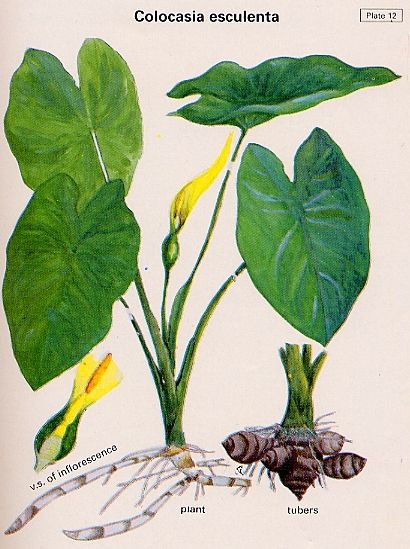

Colocasia
esculanta Linn. Schott.
Taxonomic Details
.jpg)
----- Correct Name
----- Classification
----- Synonyms
----- Common Names
Other Biological Details
----- Habit and Habitat
----- Diagnostic Features
----- Reproductive Biology
---------- Breeding System
---------- Phenology
---------- Pollinators
---------- Seed Biology
-----------Seed Germination
------ Cultivation
----- Major Pests and Diseases
Economic Potential and Uses
----- Parts Used
----- Uses
----- Harvesting Practices
----- Produce and Products
----- Chemistry
----- Processing Techniques
----- Other uses
----- Economic Potential to the
Country
----- Export Potential
Miscellaneous Information
Literature
Taxonomic
Details
Correct Name
: Colocasia
esculanta Linn. Schott.

Family :
Areaceae
Synonyms : Colocasia antiquorum Schott;
Common Names :
English: Taro, Cocoyam
Sanskrit: Kachu
Hindi: Arvi, Kachalu, Ghuiya
Bengali: Kachu
Malayalam: Shembu
Tamil: Seppan-kazangu
Telugu: Chamadumpa, Chemagadda
Kannada: Kachchi, Shamagadde
Misc:
Marathi: Alu
Back to Top
Other
Biological Details
HABIT & HABITAT:

A perennial tuberous plant, considered
to be a native of South eastern Asia. It grows wild on the banks of streams, ponds
and marshes and in moist and shady situations inside forests of India. It is also
cultivated in many areas upto an elelvation of 8,000 ft. In India it grows in
swamps of lower Bengal, moist hells of Assam and Chennai, dry uplands of Deccan,
and cold regions of the Himalayas.
Availability :
India:Bihar,Goa,Karnataka,Kerala,Madhya Pradesh,Maharashtra,Meghalaya,Rajasthan,Tamil
Nadu,Uttar Pradesh,West Bengal.
Nepal,Srilanka.
Status :
Back to Top
DIAGNOSTIC FEATURES

Large and heart shaped leaf blades, borne on long petioles 1.5-7 ft. high, arising
from a group of underground farinaceous corms. he corms vary greatly in size
and shape, the central one being big and conspicuous.
Back to Top
REPRODUCTIVE BIOLOGY

Breeding System :
Phenology :
Pollinators:
Seed Biology :
Seed Germination
:
Propagation: the plant is propagaated
by suckers or corm tops. Tops of tubers carying the petioles, or bits of corms
containing 2-3 healthy eye-buds are planted 3-5 in. deep, in rows 9 in. -2 ft.
apart according to variety and locality. It can be palnte throughout the year,
but in India usual planting period is Feb-July.
Cultivation:
Back to Top
MAJOR PESTS & DISEASES
Pests:
Diseases:
Blight-caused by Phytophthora colocasiae affects the leaves and petioles.
Bacterial leaf spot-Damage the leaves and reduce the yield
Back to Top
Economic
Potential and Uses
Parts used
All parts of taro are edible
Uses
- The tubers are rich in starch and are used in
the same as potato. It is some what sweeter and more easily cooked than potato.
The flesh is mealy and possesses a delicate nutty flavour when cooked.
- The tubers are peeled, sliced, cooked and taken
with condiments and adjuncts.
Young leaves and stalks are edible and can be cooked and used like spinach
or sag. They are cooked in the same way as other greens, but a pinch of cooking
soda is added to remove the acidity which increasess with age.
- A slightly fermented thin pasty preparation called
Poi, is prepared in Hawai from the corms and is very popular. Poi can be made
in to cakes, baked or toasted, is easily digestible and can be given to invalids.
Large sized tubers can be made into chips or crisps.
Harvesting
Practices
The crop is harvested 4-8 months after planting. During this period field
is hoed occasionally to remove weeds. At each hoeing the earth is banked upon
eihterside. A few side shoots are removed to ensure a good yield of uniform
tubers
Produce and Products
Chips, Crisps, Poi
Back to Top
Chemistry
Analysis of the tubers gave the following values:
moisture-73.1; protein-3.0; fat-1.0; mineral matter-1.7; carbohydrates-22.1; calcium-0.04;
phosphorous-0.14; %; Fe-2.1 mg/100g; Vitamin B1 80 I.U./100 g; and vitamin C trace.
Back to Top
Processing Techniques
Back to Top
Other Uses
- Folk Medicine- The pressed juice
of the petioles is used as a styptic or astringent. The presence of sapotoxin
in the tubers has been reported.
- Taro mucilage may
be used as a size for impermeable papaer. The tuber may be used for the production
of industrial alcohol.
- Taro flour, similar
to potato flour, is used in soaps and gruels and in making pancakes, biscuits
and bread. It is excellent for gravies and puddings as it is not glutinous
like what flour.
Back to Top
Export Potential
Back to Top
Miscellaneous
Information
Back to Top
Literature
- The wealth of India, A
Dictionary of Indian Raw Materials and Industrial Products, Vol. II. C, Publications
and Information Directorate, CSIR, New Delhi, India, 1950.
Back to Top